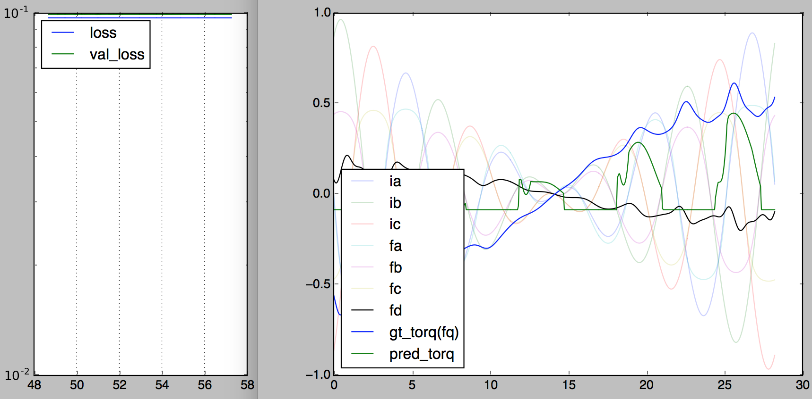
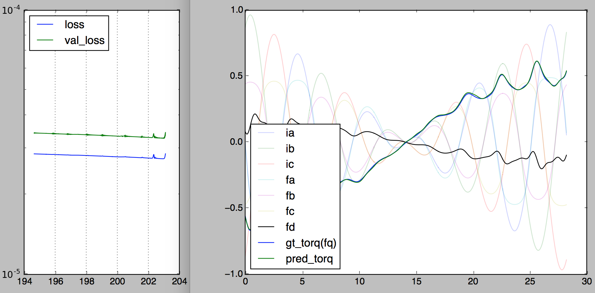
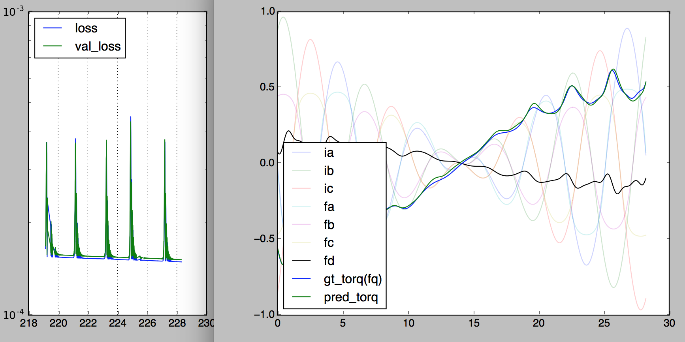
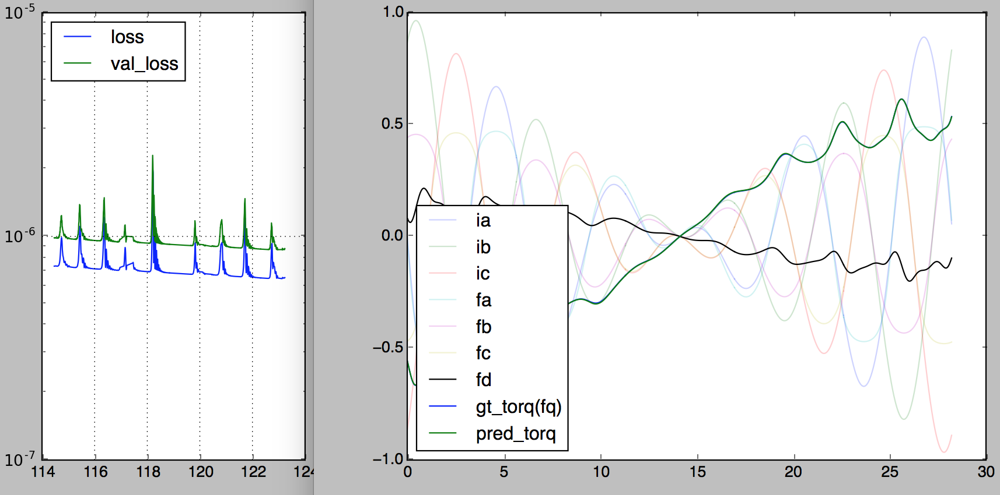
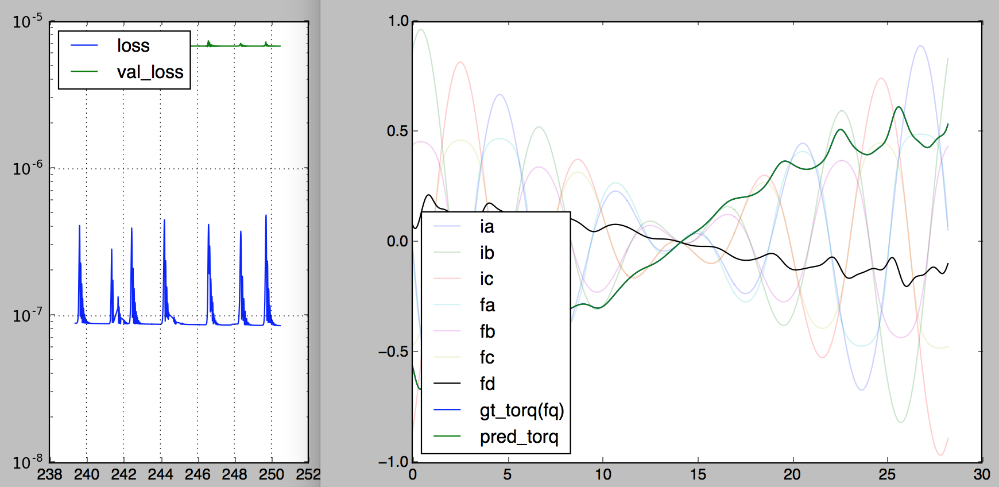
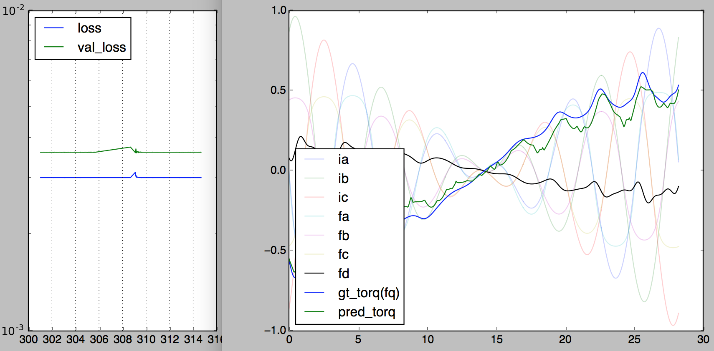

Comparison of Activation Functions 激励函数比较
problem description
data source
- non-linear unbalanced imperfect PMSM motor
training data
-
phase currents sampled from normal distribution
-
rotor phase angle sampled from uniform distribution
-
resulting static torque
-
1000 training, 500 validation
network architecture:
input: 3-phase currents & rotor phase angle
output: torque
currents[3]
->dense[3](activation)->dense[3](activation)->dense[5](activation)
->c1
angle[1]->sin_and_cos[2]
->dense[3](activation)->dense[3](activation)->dense[5](activation)
->c2
(c1[5] * c2[5]) -> dense[1] -> torque[1]
91 free parameters
objective
- predict torque based on phase currents and rotor angle.
training
-
Adam optimizer
-
minimize mean-squared difference (MSE) of predicted angle and actual angle
visualizations
-
motor torque driven by 3-phase sine wave, actual
gt_torqvs predictedpred_torq -
left plot x-axis: time elapsed (seconds)
ReLU
- won't work for obvious reasons.

sigmoid(logistic)
- good for logicstic regression, bad for real-valued data

softplus
-
integral of sigmoid
-
what ReLU used to look like
-
bad for real-valued data (lacked minus part)

tanh
-
best for real-valued data
-
least overfit + best performance among all activations tested


tanhsinc: tanh(x) * sin(x) / x
-
care more about local details
-
turn underfit into overfit instantly

ELU
-
visual coolness of ReLU
-
smoothness of softplus
-
gradient-friendliness of tanh
-
works with both real-valued data and images

Leaky ReLU (0.5)
- just in case you wonder
